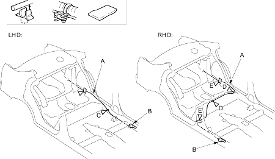

Openers
Trunk Lid Opener/Fuel Fill Door Opener Cable Replacement
|
20-126 |
|
SRS components are located in this area. Review the SRS component locations (see page 23-23), and the precautions and procedures (see page 23-25) in the SRS section before performing repairs or service.
NOTE:
- Put on gloves to protect your hands.
- Take care not to scratch the body and related parts.
- Remove these items:
- Front door sill trim (see page 20-64)
- Seat side trim, left side (see page 20-64)
- RHD: Seat side trim, right side as necessary (see page 20-64)
- Trunk side trim panel, left side (see page 20-67)
- Pull the carpet back as necessary (see page 20-70).
- Disconnect the trunk lid opener/fuel fill door opener cable (A) from the opener (B) (see step 3 on page 20-129).
| Fastener Locations |
C  : Clip : Clip
LHD, 1
|
D : Clip : Clip
RHD, 2
|
E  : Cushion tape : Cushion tape
LHD, 2
RHD, 3
|

- LHD: Release the opener cable from the clip (C). RHD: Release the opener cable from the clips (D). Remove the cushion tape (E).